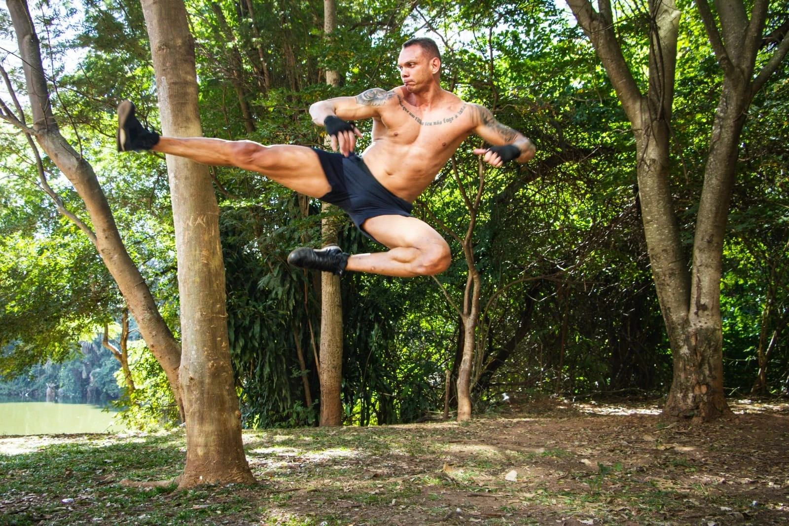

TAEKWONDO
A força encontra
o controle.

De origem coreana, o taekwondo reúne técnicas de ataque e defesa com pés e mãos. A postura, o equilíbrio e o controle dão sentido ao movimento.
Quero treinar taekwondoTAE
A ação dos pés.
KWON
A ação dos punhos.
DO
O caminho de prática.
Na história do Léo, essa prática levou ao Brasil no peito. No seu treino, ela começa pelo fundamento.
O gesto começa antes do chute.
A posição dos pés, a guarda e o deslocamento sustentam o golpe. Aprender é observar, ajustar e repetir. Retornar à posição também faz parte da execução.
Combate e formas.
No kyorugi, dois praticantes combinam ataque, defesa e leitura do adversário. No poomsae, sequências de técnicas dão forma ao movimento. São duas expressões da modalidade.
Seu primeiro passo.
Você pode começar pelos fundamentos. Conte ao Léo sua experiência e o que gostaria de aprender para conversar sobre o formato do treino.